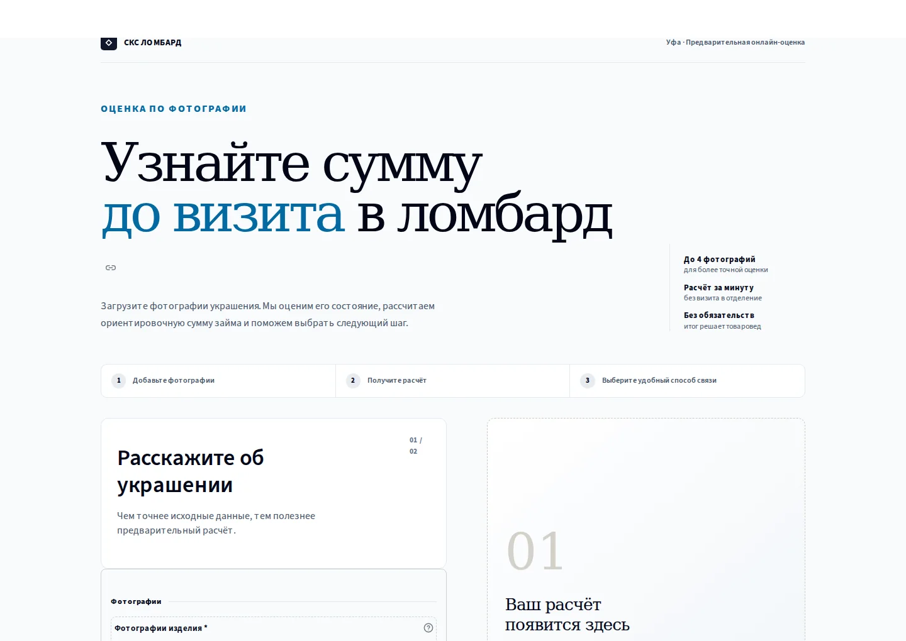

01
Хакатон · индивидуальный проект
AI-сервис оценки
ювелирных изделий
MVP для кейса ООО «СКС Ломбард»: клиент может получить ориентир суммы займа по фотографиям и анкете до визита в отделение.
- Подключил готовую мультимодальную модель Qwen для анализа типа изделия, состояния, дефектов и ориентировочного веса.
- Самостоятельно реализовал извлечение и нормализацию JSON-ответов; при недоступности модели сервис показывает расчёт по анкете с предупреждением.
- Разработал расчёт по тарифам, правила оценки дефектов, интерфейс и CRM-адаптер; покрыл расчёт и нормализацию тестами.
Граница MVP Сервис не подтверждает подлинность и пробу металла по фото. Окончательную оценку проводит товаровед при очном осмотре.
Следующая итерация Проверить качество визуального анализа на размеченных примерах и исследовать признаки подделок, сохранив финальную проверку за специалистом.
